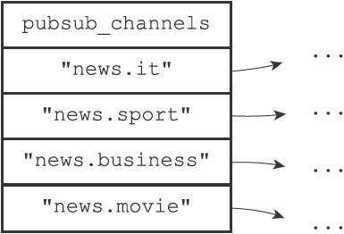
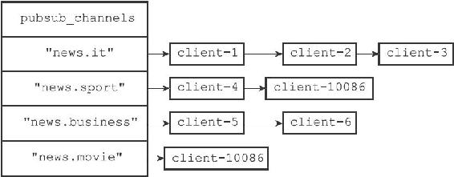
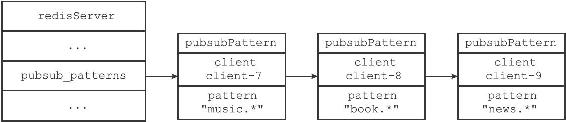
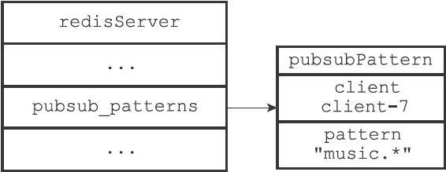

18.4 查看订阅信息
PUBSUB命令是Redis 2.8新增加的命令之一，客户端可以通过这个命令来查看频道或者模式的相关信息，比如某个频道目前有多少订阅者，又或者某个模式目前有多少订阅者，诸如此类。
以下三个小节将分别介绍PUBSUB命令的三个子命令，以及这些子命令的实现原理。
18.4.1 PUBSUB CHANNELS
PUBSUB CHANNELS[pattern]子命令用于返回服务器当前被订阅的频道，其中pattern参数是可选的：
·如果不给定pattern参数，那么命令返回服务器当前被订阅的所有频道。
·如果给定pattern参数，那么命令返回服务器当前被订阅的频道中那些与pattern模式相匹配的频道。
这个子命令是通过遍历服务器pubsub_channels字典的所有键（每个键都是一个被订阅的频道），然后记录并返回所有符合条件的频道来实现的，这个过程可以用以下伪代码来描述：
def pubsub_channels(pattern=None):
#
一个列表，用于记录所有符合条件的频道
channel_list = []
#
遍历服务器中的所有频道
#
（也即是pubsub_channels
字典的所有键）
for channel in server.pubsub_channels:
#
当以下两个条件的任意一个满足时，将频道添加到链表里面：1
）用户没有指定pattern
参数2
）用户指定了pattern
参数，并且channel
和pattern
匹配
if (pattern is None) or match(channel, pattern):
channel_list.append(channel)
#
向客户端返回频道列表
return channel_list
举个例子，对于图18-18所示的pubsub_channels字典来说，执行PUBSUB CHANNELS命令将返回服务器目前被订阅的四个频道：

图18-18 pubsub_channels字典示例
redis> PUBSUB CHANNELS
1) "news.it"
2) "news.sport"
3) "news.business"
4) "news.movie"
另一方面，执行PUBSUB CHANNELS"news.[is]*"命令将返回"news.it"和"news.sport"两个频道，因为只有这两个频道和"news.[is]*"模式相匹配：
redis> PUBSUB CHANNELS "news.[is]*"
1) "news.it"
2) "news.sport"
18.4.2 PUBSUB NUMSUB
PUBSUB NUMSUB[channel-1 channel-2...channel-n]子命令接受任意多个频道作为输入参数，并返回这些频道的订阅者数量。
这个子命令是通过在pubsub_channels字典中找到频道对应的订阅者链表，然后返回订阅者链表的长度来实现的（订阅者链表的长度就是频道订阅者的数量），这个过程可以用以下伪代码来描述：
def pubsub_numsub(*all_input_channels):
#
遍历输入的所有频道
for channel in all_input_channels:
#
如果pubsub_channels
字典中没有channel
这个键
#
那么说明channel
频道没有任何订阅者
if channel not in server.pubsub_channels:
#
返回频道名
reply_channel_name(channel)
#
订阅者数量为0
reply_subscribe_count(0)
#
如果pubsub_channels
字典中存在channel
键
#
那么说明channel
频道至少有一个订阅者
else:
#
返回频道名
reply_channel_name(channel)
#
订阅者链表的长度就是订阅者数量
reply_subscribe_count(len(server.pubsub_channels[channel]))

图18-19 pubsub_channels字典
举个例子，对于图18-19所示的pubsub_channels字典来说，对字典中的四个频道执行PUBSUB NUMSUB命令将获得以下回复：
redis> PUBSUB NUMSUB news.it news.sport news.business news.movie
1) "news.it"
2) "3"
3) "news.sport"
4) "2"
5) "news.business"
6) "2"
7) "news.movie"
8) "1"
18.4.3 PUBSUB NUMPAT
PUBSUB NUMPAT子命令用于返回服务器当前被订阅模式的数量。
这个子命令是通过返回pubsub_patterns链表的长度来实现的，因为这个链表的长度就是服务器被订阅模式的数量，这个过程可以用以下伪代码来描述：
def pubsub_numpat():
# pubsub_patterns
链表的长度就是被订阅模式的数量
reply_pattern_count(len(server.pubsub_patterns))

图18-20 pubsub_patterns链表
举个例子，对于图18-20所示的pubsub_patterns链表来说，执行PUBSUB NUMPAT命令将返回3：
redis> PUBSUB NUMPAT
(integer) 3

图18-21 pubsub_patterns链表
而对于图18-21所示的pubsub_patterns链表来说，执行PUBSUB NUMPAT命令将返回1：
redis> PUBSUB NUMPAT
(integer) 1